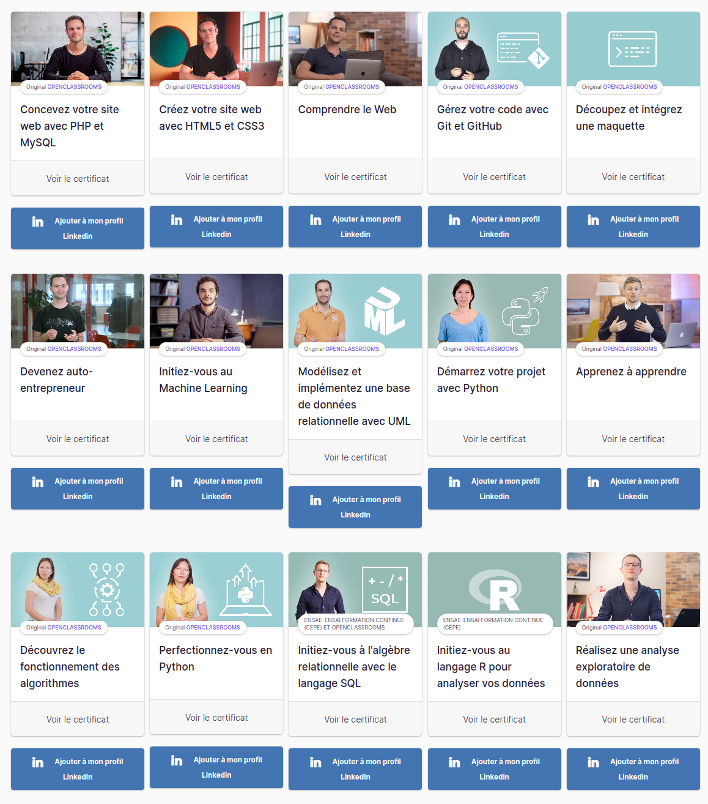
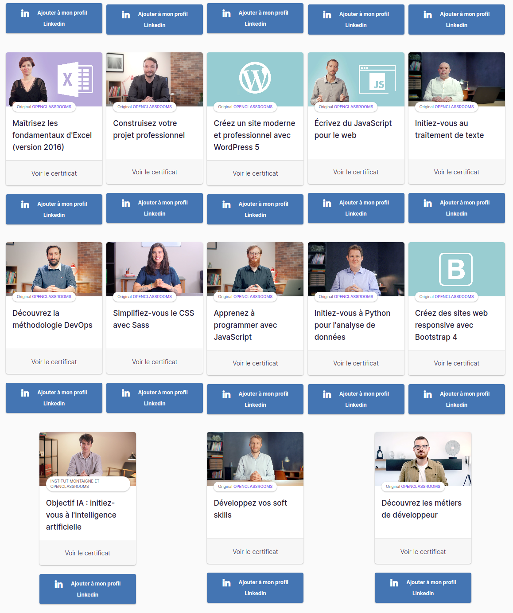

Baptiste Giannesini
Summary
I'm a certified Data Analyst with a real enthusiasm for tech centered topics.
Education
- Level 6 (master) certification "Data Analyst" - OpenClassrooms 2022
- Level 4 professional "Technician CNC Machinist" - GRETA AURA region 2018
- Level 4 Professional "Pharmacy dispenser" - IFPS Côte d'Azur 2011
- Level 4 General Science degree (physics, chemistry) - Lycée Jean Moulin 2003
Work Experiences
Technical Skills
- All OS (Windows, Linux, MacOs and WSL)
- MS Office Suite
- Website Creation (HTML5, CSS3, PHP, Javascript)
- Database (SQL, NoSQL)
- Python development
- R and Rstudio (Posit)
- Data:
- collection,
- cleaning,
- exploration,
- visualisation
- Dashboard creation
- Statistical Analysis
- Machine Learning
- Mechanical 3D Modeling
- 3D Printing
Soft Skills
- Curiosity
- Autonomy
- Organisation
- pedagogy
Certifications

